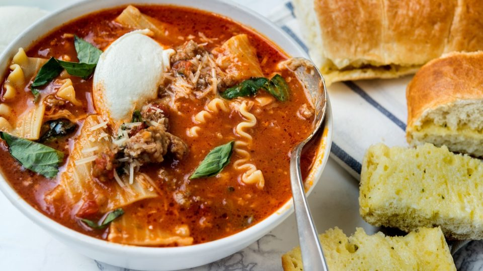

Lasagna Soup

Description
All of lasagna's goodness noodles, beef, sausage, tomatoes, Italian herbs and cheese in a soup made for a delicious combination.
Ingredients
- 8 ounces lasagna noodles, broken into roughly 3-inch pieces
- Salt
- 2 tablespoons olive oil
- 1 large onion, diced
- 1 pound ground beef and/or Italian sausage (casings removed)
- 3 garlic cloves, minced
- 1 teaspoon dried oregano
- 2 tablespoons tomato paste
- 1 (28-ounce) can crushed tomatoes
- 4 cups chicken stock
- Red pepper flakes
- 1 small bunch basil leaves, torn into pieces
- 1/2 cup shredded Parmesan
- 1/2 cup shredded mozzarella
- Ricotta cheese for topping
- New York Bakery® Bake & Break Bread(Optional)
How To Cook
- Bring large pot of salted water to boil. Add noodles and cook until al dente. Drain and toss with 1 tablespoon olive oil. Set aside.
- Heat 1 tablespoon of olive oil in large soup pot over medium heat. Add onion and cook until soft and translucent for 3 to 5 minutes. Add beef and/or sausage, garlic and oregano. Cook, breaking up meat with wooden spoon, until browned for about 3 minutes.
- Add tomato paste and cook, stirring, until darkened for about 2 minutes. Add tomatoes and chicken stock. Season with salt and red pepper flakes for taste. Bring to boil, decrease heat and simmer for 15 to 20 minutes.
- Stir in cooked noodles, basil, Parmesan and mozzarella. Simmer for 2 minutes.
- Divide soup among bowls. Top with spoonful of ricotta. Serve with bread.